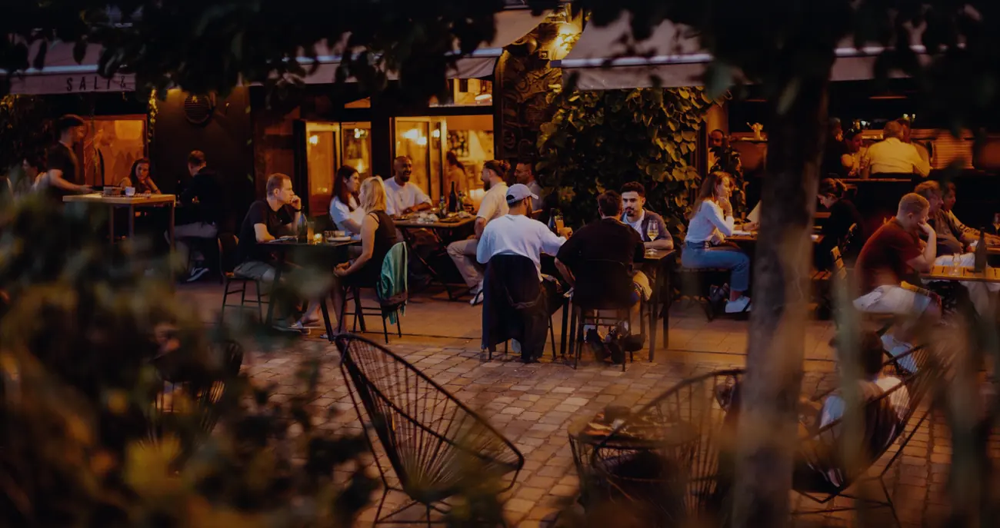

Schreib unswas Schönes.
Was mit einem Lebenstraum begann, wurde zu drei Unternehmen und einigen Leuten, die die Sache weiter zum Wachsen bringen.
- Tisch
- Ab 10 Pers.
- zentrale@saltandsilver.de
- Alles andere
- mail@saltandsilver.de


Lange Tafel,lange Nacht.


Ein langer Tischoder das ganze Haus.
Geburtstag, Team, Hochzeit oder einfach alle auf einmal: Sag uns, wer kommt, und wir melden uns mit einem Vorschlag.
Ab zehn Personen reservieren wir nicht über OpenTable, sondern persönlich. Die Restaurants gibt es auch exklusiv für Events und Veranstaltungen.
Gut zuwissen.
Für alle anderen Anliegen schreib uns an mail@saltandsilver.de
mail@saltandsilver.de01Wie kann ich reservieren?
Wir bieten mit OpenTable eine Echtzeit-Online Reservierung an. Du kannst hier bequem an deinem Wunschtag online reservieren und erhältst direkt die Bestätigung. Eine Reservierung per E-Mail (zentrale@saltandsilver.de) ist ebenfalls möglich.
02Wie kann ich für mehr als 10 Personen reservieren?
Für Reservierungen ab 10 Personen, schreib uns gerne eine Mail an zentrale@saltandsilver.de.
03Ein Restaurant exklusiv mieten?
Die Restaurants können exklusiv für Events / Veranstaltungen gemietet werden. Anfragen an: zentrale@saltandsilver.de.
04Wo liegt der Unterschied der drei Restaurants?
Salt & Silver Restaurant:
Hier servieren wir unseren Gästen ein kreative Karte. Die Küche im Restaurant ist geprägt von kräftigen Feuer-Aromen, komplexer Würzigkeit und erfrischendem Säure-Schärfe Spiel. Unser Menü ändert und entwickelt sich ständig weiter. Wir sind immer auf der Suche nach den besten Zutaten der Saison und dem frischesten Fang des Tages – mit den dazu passenden Getränken. Wir bitten Sie also, uns zu vertrauen und sich für die Überraschungen zu öffnen, die wir für Sie vorbereitet haben.
Bistro Crudo:
Hier servieren wir Tacos, die wir gut finden, Ceviches, auf die wir stolz sein können und Bar-Food, das glücklich und durstig macht. Egal ob ein kurzer Snack oder ein voller Tisch mit vielen Freunden – das Bistro Crudo ist euer Wochenende-Bistro für kulinarische Weltreisen im Salt & Silver Style.
Salt & Silver am Meer:
In St. Peter-Ording arbeiten wir mit Rindern & Lämmern, die auf den hiesigen Salzwiesen grasen, Muscheln & Austern aus der Nordsee und Fisch, den man mit gutem Gewissen genießen kann. Außerdem simple und dennoch raffinierte vegetarische Köstlichkeiten von den Höfen im Umland – knusprig & rauchig über offenem Feuer gegrillt. Jeder bestellt à la carte, Menüs bieten wir nicht an.
Da wir sehr saisonal und regional arbeiten, kann sich die Karte, bei einer Reservierung die weit im Voraus liegt, noch ändern.
05Wo befinden sich die Restaurants?
Das Hamburger Restaurant & Bistro Crudo hat seinen Standort in der St. Pauli Hafenstraße 136-140 in Hamburg.
Das Salt & Silver am Meer befindet sich am Böhler Strand in St. Peter-Ording.
06Wie sind die Öffnungszeiten?
Salt & Silver Hamburg:
Montag bis Samstag:
- 18 – 24 Uhr
Die Küche schließt um 21:30 Uhr.
Bistro Crudo:
Freitag & Samstag:
- 18 – 24 Uhr
Die Küche schließt um 21:30 Uhr.
Salt & Silver am Meer:
April bis Oktober, Mittwoch Ruhetag.
- 12 – 22 Uhr geöffnet
- Küchenpause von 15:30 – 17 Uhr
- Letzte Küchenbestellung 21 Uhr
07Wann hat der Kiosk in St. Peter-Ording geöffnet?
Der Kiosk hat bei Strandwetter von 12 – 17 Uhr geöffnet. An den anderen Tagen gibt es die Möglichkeit kleine Speisen und Getränke als Take-away oben im Restaurant zu erwerben.
08Kartenzahlung? Kein Problem!
Du kannst bei uns mit folgenden Karten bezahlen: MasterCard/Visa/EC-Karte.
ACHTUNG: In den beiden Hamburger Restaurants ist keine Bargeldzahlung möglich.
09Wo kann ich eure Speisekarte sehen?
Unsere Speisekarten findest du auf unserer Website: saltandsilver.de/restaurants
10Gibt es vegetarische/vegane Speisen?
Wir bieten eine Vielzahl an vegetarischen Speisen und einigen veganen an. Isst du jedoch ausschließlich vegan, gib uns doch gerne bei deiner Reservierung vorab Bescheid, damit sich die Küche optimal auf deine Wünsche vorbereiten kann.
11Ich habe eine Allergie/Einschränkungen im Essverhalten. Kann ich bei euch essen?
Schreibe uns gerne eine Mail an (zentrale@saltandsilver.de) oder füge deine Allergien direkt bei deiner Buchung hinzu.
12Gibt es Gutscheine?
Unsere Gutscheine für Hamburg und St. Peter-Ording kannst du über unseren Onlineshop erwerben. Du entscheidest: Direktversand per PDF oder eine Gutscheinkarte per Post.
ACHTUNG: Die Gutscheine gelten jeweils für unsere Restaurants in Hamburg ODER St. Peter-Ording.
13Können wir unseren Hund mitbringen?
In St. Peter-Ording und in den Hamburger Restaurants sind Hunde gern gesehen. Teile uns aber bitte vorher per Reservierung mit, wenn du einen Hund mitbringst. Bitte hab Verständnis dafür, dass wir im Falle eines vollen Restaurants und eines sehr großen Hundes nicht immer einen Tisch im Innenraum anbieten können.
14Ist das Restaurant Barrierefrei?
In Hamburg ist die Terrasse Barrierefrei. Jedoch nicht die Toiletten.
15Wie fordere ich Bewirtungsbelege an?
Um einen Bewirtungsbeleg/ eine Rechnung zu erhalten, sende bitte eine Mail an mail@saltandsilver.de. Füge bitte Deinen Rechnungsbeleg aus dem Restaurant, sowie die Rechnungsadresse Deiner Firma der E-Mail hinzu. Unser Team sendet dir die Rechnung als PDF zu.

Schön, dass ihrda seid.